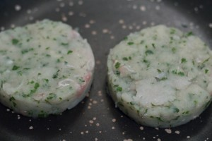
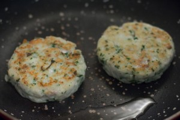
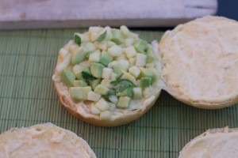
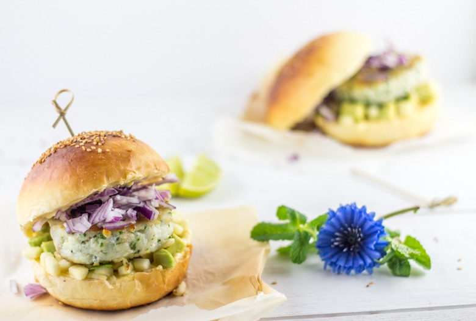
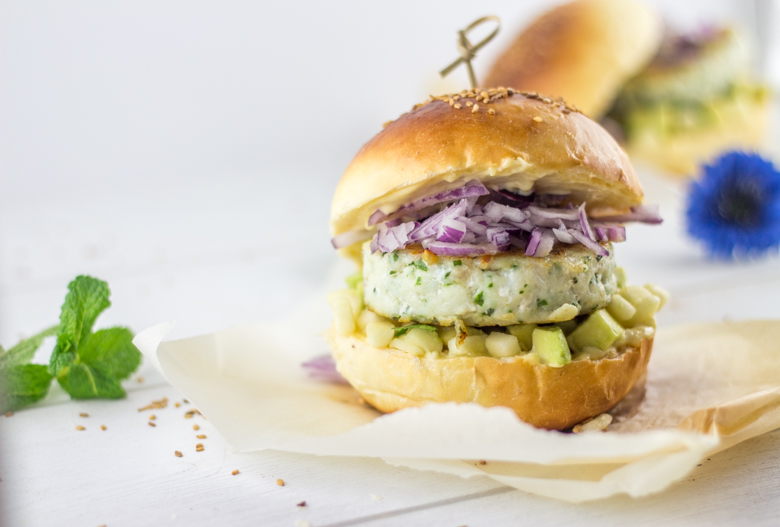

Burger marin

Envie de changer un peu des hamburgers traditionnels je vous propose aujourd’hui de découvrir une recette tout droit sortie de ma tête : un burger poisson totalement « homemade »! Récemment j’ai eu envie de tester le burger poisson maison pour sortir un peu de l’ordinaire et pour manger quelque chose d’un peu plus light qu’un burger classique! Je n’avais jamais mangé de burger de poisson auparavant ni même jamais pris de fish burger dans les grandes enseignes de fastfood alors ce fut un peu une découverte pour moi.
Ceux qui ont l’habitude de me lire savent que je suis plutôt burger-addict (et mon chéri n’en parlons pas^^) vous pouvez d’ailleurs retrouver mes autres recettes ici! Mais qui dit « burger » ne dit pas forcement « malbouffe » car ici tout est fait maison 🙂
J’ai crée cette recette de toute pièce avec mon chéri (nous avons été jusqu’à le dessiner) pour y mettre que des produits que nous aimons et des saveurs qui s’accordent entres elles. Pas de fromage, pas de steak donc, ni de sauce qui déborde mais le goût lui est bien au rendez vous (ouf!!) et c’est bien ça qui importe ! Ce burger de poisson est donc composé d’une galette de cabillaud et de coriandre coincée entre une couche d’oignon rouge et d’un mélange de pomme et d’avocat préalablement mariné dans du citron vert le tout dans des buns maison briochés tartinés d’un peu d’aïoli.
L’image ne donnant pas le goût (pourtant quelquefois j’aimerais vraiment pouvoir goûter ce que je vois à travers mon écran) je vous invite à tester de toute urgence cette recette qui permet de manger et cuisiner autrement à la fois les burgers mais aussi et surtout le poisson.
Je vous laisse maintenant découvrir la recette et j’espère qu’elle vous plaira!
Ingrédients
- Farine - 340g
- Levure de boulangerie instanée - 1càc
- Sucre - 2càs
- Sel - 1càc
- Beurre - 25g
- Eau - 7cl
- Lait - 10cl + 1càs pour badigeonner
- Jaunes d'oeufs - 2
- Jaune d'oeuf (facultatif) - 1
- Ail - 4 gousses
- Huile d'olive
- Sel
- Filet de cabillaud - 250g
- Pomme - 1
- Avocat - 1
- Oignon rouge - 1
- Citron vert - 1/2
- Coriandre - 1 poignée
Instructions
- Mélanger tous les ingrédients secs ensemble
- Faire chauffer dans une casserole l'eau et le beurre jusqu'à ce que le beurre fonde entièrement
- Hors du feu ajouter le lait
- Mélanger les ingrédients secs avec le mélange tiède beurre-eau-lait dans le bol de votre robot
- Pétrir tout en ajoutant les jaunes d’œufs un à un, pendant une bonne dizaine de minutes au robot (20min à la main pour les courageux)
- Quand la pâte est bien élastique former une boule bien lisse
- Huiler un récipient et y mettre votre boule puis couvrir à l'aide d'un film alimentaire
- Laisser reposer pendant 1h30 à température ambiante, la pâte doit doubler de volume
- Reprendre votre boule et la découper en parts égales (j'en avais fait 6)
- Faire 6 boules et les placer sur votre plaque de cuisson recouverte de papier sulfurisé
- Couvrir d'un torchon et laisser à nouveau reposer pendant 1h
- Préchauffer le four à 220°
- Badigeonner les boules d'un peu de lait et saupoudrer de graines de sésame ou de pavot
- Enfourner alors pour 10 minutes tout en surveillant bien jusqu'à que le dessus des buns soit bien doré
- Laisser refroidir pour ensuite les couper plus facilement
- Peler les gousses d'ail
- Presser les gousses d'ail au presse ail ou dans écraser les dans un mortier à l'aide d'un pilon
- Ajouter le jaune d'œuf
- Saler
- Verser petit à petit l'huile d'olive en filet tout en remuant(toujours dans le même sens) avec un pilon ou une fourchette
- Continuer ainsi jusqu'à obtenir une sauce bien lisse (comme une mayonnaise)
- Ajouter du sel si nécessaire
- Réserver au frais.
- Découper la pomme et l'avocat en petit dés
- Presser le jus d'un demi citron vert
- Laisser mariner les pommes et l'avocat dans le jus de citron. Réserver au frais
- Mixer (par petites pressions) le poisson avec la coriandre
- Former des galettes (vous pouvez vous aider d’emporte-pièces pour avoir une forme parfaite)
- Cuire les galettes de chaque côté dans une poêle sur feu moyen avec un peu d'huile d'olive jusqu'à ce qu'elles soient dorées
- Pendant ce temps, couper l'oignon en petits dés
- Sortir le mélange pomme-avocat du frais et égoutter
- Procéder au montage du burger
- Couper vos buns en deux
- Tartiner chaque face d'aïoli
- Déposer sur la base du burger le mélange pomme-avocat
- Recouvrir avec une galette de cabillaud
- Déposer une couche d'oignon rouges sur la galette
- Refermer le burger





Les tips de la communauté
Recette originale très appréciée pour son côté moins lourd que les burgers traditionnels. Les commentaires louent l'originalité, la qualité des photos et l'intérêt pour une alternative plus saine.
Astuces
- Le burger au poisson est plus léger que les burgers classiques
- Utiliser du poisson frais ou du cabillaud pour les galettes
- L'idée peut être adaptée avec d'autres poissons comme le thon frais
- Les photos de présentation font toute la différence
Variantes suggérées
- Utiliser du thon frais à la place du poisson blanc
- Tester avec d'autres variétés de poisson selon la disponibilité
- Ajouter des garnitures différentes pour varier les saveurs